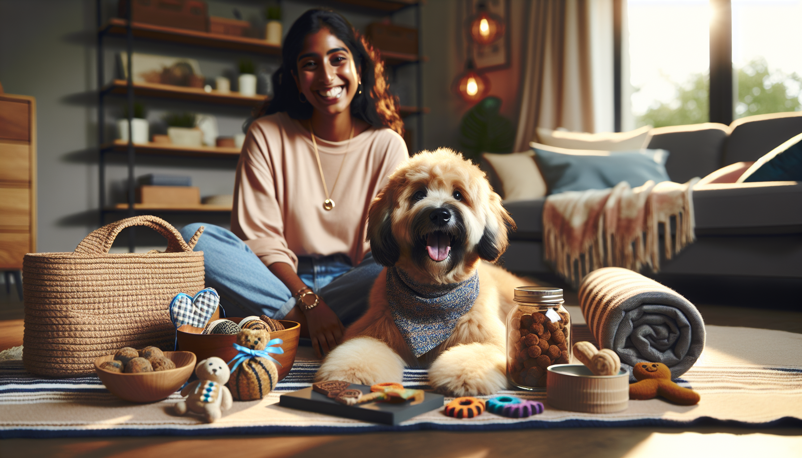

Every dog owner knows the feeling: you want to give your pup the world, but your budget has other ideas. The good news is that spoiling your dog does not have to mean expensive subscription boxes, designer accessories, or a cart full of premium pet products. In fact, some of the best ways to make your dog feel loved are simple, affordable, and rooted in the things dogs care about most: your time, attention, comfort, play, and a little extra fun.
Whether you are a devoted pet parent, a dog lover shopping for a thoughtful gift, or someone looking for small ways to make your furry best friend happier, there are plenty of creative options that do not cost a fortune. From DIY enrichment to personalized touches, there are so many ways to treat your dog while staying smart with your spending.
In this guide, we are sharing practical, heartwarming ideas for how to spoil your dog without breaking the bank. These tips are easy to try, budget-friendly, and perfect for everyday pampering.
One of the easiest and most affordable ways to spoil your dog is to make playtime feel exciting and intentional. Dogs thrive on interaction, and a few extra minutes of focused play can mean more to them than an expensive new gadget.
You do not need a giant toy haul to keep things fun. Rotating the toys your dog already has can make old favorites feel brand new again. Instead of leaving every toy out at once, keep a few stored away and swap them every week. This creates novelty without requiring constant purchases.
You can also upgrade playtime with simple games that cost little to nothing:
Dogs love variety, movement, and time with their people. If your goal is to spoil your dog on a budget, regular interactive play is one of the best places to start.
Store-bought treats can add up quickly, especially if you are buying specialty snacks or training treats. Homemade dog treats are often much more affordable, and they give you full control over the ingredients. Plus, making them can be a fun weekend project for the whole family.
Simple dog-friendly ingredients like peanut butter, pumpkin puree, oats, banana, plain yogurt, and sweet potato can be turned into tasty homemade goodies with minimal effort. You do not need to be an expert baker either. Many recipes only require mixing a few ingredients and baking them into bite-sized pieces.
Some easy low-cost treat ideas include:
Just be sure to use dog-safe ingredients and avoid harmful foods like xylitol, chocolate, grapes, raisins, onions, and excessive salt. When made thoughtfully, DIY treats are a sweet and affordable way to show your dog some extra love.
Spoiling your dog is not always about excitement. Sometimes it is about comfort. Small upgrades to your dog’s everyday space can make a big difference in how cozy and cared for they feel, and many of these changes are surprisingly budget-friendly.
You do not need to buy a luxury dog bed to make your pup more comfortable. A soft blanket, a washable cushion, or even a dedicated corner with their favorite things can become a special little retreat. Dogs love spaces that feel safe, familiar, and warm.
Affordable comfort ideas include:
Even a simple refresh can feel like a treat to your dog. Comfort is one of the most meaningful forms of pampering, especially for puppies, senior dogs, or anxious pups who appreciate a calm, cozy environment.
When people think about spoiling a dog, they often think about buying more products. But many dogs benefit even more from enrichment activities that challenge their minds and engage their senses. Mental stimulation helps prevent boredom, reduces unwanted behaviors, and gives dogs a satisfying outlet for their natural instincts.
Best of all, enrichment can be incredibly affordable. You can use what you already have at home to create fun and rewarding experiences.
Budget-friendly enrichment ideas include:
Sniffing, problem-solving, foraging, and exploring are all deeply rewarding for dogs. If you want to spoil your dog in a way that supports their wellbeing, enrichment is one of the smartest and most affordable choices you can make.
There is something undeniably charming about personalized pet products. They make everyday items feel more meaningful, and they can turn a practical purchase into a memorable gift. The good news is that personalized dog accessories do not always have to be expensive. Thoughtfully chosen custom items can be affordable while still feeling unique and premium.
For pet owners and gift shoppers alike, personalized products are a lovely way to celebrate a dog’s personality. A custom bandana, name tag accessory, treat jar label, or keepsake item can make your pup feel extra special while also adding style to daily life.
Personalized touches are especially great for:
Unlike impulse purchases that may not get much use, a personalized item often becomes a favorite because it feels intentional. If you are looking for a budget-conscious way to spoil your dog or surprise a fellow dog lover, custom pet products are a thoughtful option with lasting appeal.
It may sound simple, but one of the most powerful ways to spoil your dog is to be fully present. Dogs are incredibly tuned in to their humans, and quality time can be more rewarding than anything money can buy. A little extra attention can go a very long way.
This does not have to mean grand outings or expensive adventures. It can be as easy as adding a few intentional moments to your routine. Sit on the floor for cuddles. Take a slightly longer walk. Brush your dog gently if they enjoy grooming. Talk to them. Let them tag along during a relaxing afternoon at home.
Here are a few free or low-cost ways to make your dog’s day:
Dogs do not measure love by price tags. They measure it in connection, routine, trust, and shared joy. When you invest your time, your dog absolutely feels it.
Spoiling your dog on a budget is not just about finding cheap ideas. It is also about spending more intentionally. A smart approach helps you avoid waste, choose items your dog will actually enjoy, and make the most of every dollar.
Before buying something new, ask yourself a few simple questions. Will my dog use this regularly? Does it fit their size, habits, and preferences? Can it serve more than one purpose? Is there a homemade or reusable alternative?
Money-saving shopping tips include:
Thoughtful spending allows you to spoil your dog in ways that feel joyful, not stressful. The goal is not to buy the most things. It is to create moments, routines, and comforts that genuinely make your dog’s life better.
If you have ever worried that spoiling your dog means overspending, take heart: your pup does not need luxury to feel adored. A homemade treat, a cozy blanket, a fun enrichment game, a personalized accessory, or a little more time with you can all feel like the ultimate gift.
The best part about budget-friendly dog pampering is that it often leads to more meaningful experiences. Instead of focusing on expensive extras, you are creating comfort, joy, and connection in ways your dog truly understands. That is what spoiling your dog is really all about.
Whether you are treating your own furry friend or shopping for a fellow dog lover, small thoughtful touches can make a big impact. If you are ready to add a personal touch to your pup’s day, shop personalized pet products at SnoutAndAbout on Etsy and find affordable gifts made for dogs who deserve to feel extra special.